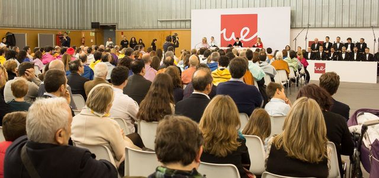

Campus Party UE es una LAN Party, creada enla Universidad Europea de Madrid por
alumnos del área de Ciclos Formativos de TIC, Animación y Videojuegos, que concentra
aficionados a la informática, innovación, ciencia, creatividad, emprendimiento y ocio
digital del mundo entero.
Para la creación de este evento, nos hemos basado en los eventos que se han ido
realizando a lo largo del tiempo en distintas localidades españolas como Málaga, Palma
de Mallorca y Valencia; y que a partir de 2008, inició una expansión internacional con
eventos en Brasil, Colombia, Ecuador, México, El Salvador, Reino Unido, Alemania y Costa
Rica.
Las actividades más comunes giran en torno a variados contenidos, entre los que están
conferencias y talleres de astronomía, makers, desarrollo y programación, diseño,
software libre, fotografía, emprendimiento, multimedia, drones, diseño de
videojuegos, video, partidas de videojuegos multijugador. Además, está el intercambio
de todo tipo de datos, información y de conocimientos en diversos campos temáticos
relacionados con la temática del evento. Campus Partyes reconocido como "el mayor
evento de internet del mundo".
El equipo que organiza este gran evento esta formado por Alvaro Michel, Sergio Barrero y Santiago Argudo.